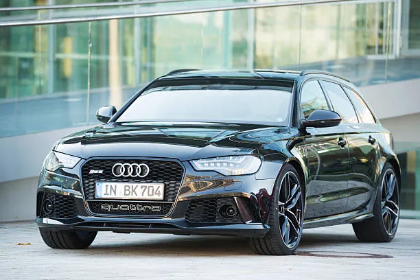

The Audi RS 6
Based on the A6 platform, the RS 6's engines are front-mounted and longitudinally oriented, while the transmission is mounted immediately at the rear of the engine in a longitudinal orientation, in the form of a transaxle. Like all S and RS models, the RS 6 is only available with Audi's 'trademark' Torsen-based quattro permanent four-wheel drive system. The C5 RS 6 was the fourth model to come out of Audi's private subsidiary company, "quattro GmbH". The first was the Audi RS 2 Avant, from a joint venture between Porsche and Quattro GmbH for the Audi marque. The second was the Audi C4 S6 Plus, produced from April 1996 to July 1997. The third was the 2000 Audi B5 RS 4; the fifth was the 2005 Audi B7 A4 DTM Edition saloon, and the sixth was the 2006 Audi B7 RS 4. The seventh and current (as of January 2010) Quattro GmbH model is the latest Audi C6 RS 6. Production of the original Audi C5 RS 6 began in June 2002 and ended in September 2004. The second Audi C6 RS 6 was introduced at the 2007 Frankfurt Motor Show. The original RS 6 (C5) was the first Audi RS variant exported to North America, while the C6 and C7 RS 6 were only sold in Europe, with the C8 RS 6 again being offering in North America.
The "RS" initials are taken from the German: RennSport – literally translated as "racing sport", and is Audi's ultimate 'top-tier' high-performance trim level, positioned a noticeable step above the "S" model specification level of Audi's regular model range line-up. Like all Audi "RS" models, the RS 6 pioneers some of Audi's newest and most advanced engineering and technology, and so could be described as a halo vehicle, with the latest RS 6 Performance having the equal most powerful internal combustion engine out of all Audi models, with the same horsepower and torque as the physically larger Audi S8 Plus. Unlike the A6 and S6, however, the RS 6's engines in the C5 and C6 iterations have not been shared with any other vehicle in Audi's lineup. However, for the C7 generation, the Audi RS 6 has the same 4.0L bi-turbo V8 engine as the Audi RS 7, with both being positioned at the top of the Audi S and RS range, and detuned variants of the same engines are found in the Audi S8, Audi A8, and Audi S6.